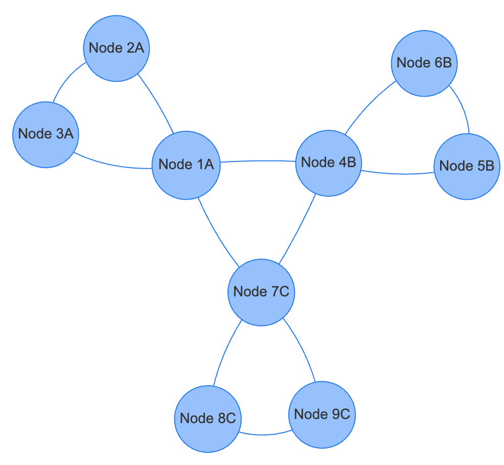
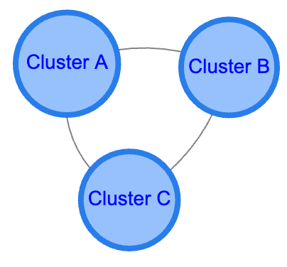
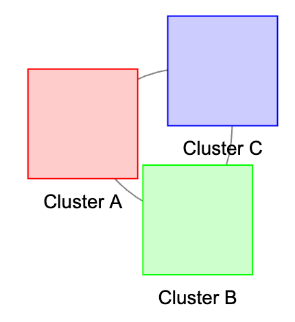

Clustering in Graph Visualization
Network diagrams can quickly get vary complicated. As the number of vertices gets larger, the network becomes more difficult to view and see key relationships. We need ways to quickly collapse a group of nodes into a single symbol to reduce complexity. The primary tool we used to do this is called a graph node cluster.
What is a Cluster?
In graph theory, a cluster in is a composite node that encapsulates a group of related nodes and their connections, formed based on specific criteria, to simplify and enhance the visualization of network diagrams. It serves as an interactive element that can be expanded or collapsed, allowing users to explore the network at different levels of detail while reducing visual complexity.
Why Use Clusters?
-
Representation of Grouped Nodes: A cluster acts as a higher-level abstraction, encapsulating several nodes (and their edges) into one composite node. This helps in visualizing the network at different levels of detail.
-
Formation Criteria: Clusters are formed based on specific conditions or attributes of the nodes, such as shared properties (e.g., a common
domainattribute), connectivity patterns, or spatial proximity. -
Interactivity: Clusters are interactive elements in the network graph. Users can expand (open) a cluster to reveal the individual nodes it contains or collapse them back into a single cluster node. This dynamic interaction allows for exploration of the network at varying granularities.
-
Visual Simplification: By clustering nodes, the network diagram becomes less cluttered, making it easier to understand the overall structure and relationships without being overwhelmed by too many individual elements.
-
Simplifies Complex Networks: Clustering reduces the number of visible nodes and edges, making large and complex networks more manageable and understandable.
-
Improves Performance: By displaying fewer elements, rendering performance is enhanced, leading to smoother interactions, especially with large datasets.
-
Enhances User Experience: Interactive clustering allows users to focus on areas of interest within the network, drilling down into clusters for detailed information or zooming out for an overview.
-
Facilitates Data Analysis: Grouping related nodes helps in identifying patterns, relationships, and hierarchical structures within the network data.
Example: Domain Clusters
In the following example, we will show how different sections of a large graph data model can be grouped into clusters. We call each grouping of related vertex types a domain.
When we build large complex data models, we would ideally like is to be able to group the nodes into domains of similar items. For example, Location, Address, City, State and Country might all be in the geospatial domain. Content that is converted into Documents, DocumentSections, DocumentChunks, Entities and Concepts are part of the lexical domain.
-
Clustering by Attribute (
domain): Nodes that share the samedomainattribute are merged into a cluster. For instance, all nodes withdomain: 'A'are grouped into a cluster labeled 'Cluster A'. -
Cluster Node Properties: The appearance of the cluster node can be customized (e.g., shape, size, color, label placement) to distinguish it from regular nodes and to convey meaningful information about the grouped nodes.
-
Re-collapsing Clusters: The code allows for clusters to be re-collapsed by double-clicking on any node that was part of an expanded cluster, enhancing the interactive exploration of the network.
Lab 1: Working Interactive Clustering Examples with vis.js
This next section assumes you know about the way that graphs are represented in JSON in the vis.js library. See out Intro to Vis.js
Here is an example of a flattened view of a small graph:

Note that there are vertices grouped by three letters: "A", "B" and "C".
In this lesson we will show you how to group communities of nodes
together under a single icon called a cluster.
This allows you to quickly focus
in on the key nodes in a graph you are concerned with without
having the rest of the graph get in the way.
In our example, each domain will have a label property so that the software can quickly identify what nodes to cluster together or un-cluster to show internal detail.
Here is a high-level clustered view of the above graph network using circles as the grouping icon:

Here is a demonstration of opening a clustered node:
Simple Interactive Clustering Example 1 (expand only)
Note that you can drag the cluster around and double click on a cluster to expand the nodes within that cluster. This first example does not have any way to re-collapse a cluster other than refreshing the entire page.
Tip
When generating graph vertex-type network diagrams with vis.js, prefer the '''circle''' shape over the '''dot''' shape so the text appears inside the vertex, not under the vertex.
Lab2: Adding a Domain Property to Each Vertex
In the following examples, we will assign each node to
a specific domain using the domain property.
The values in the example are "A", "B", and "C" however
you can use any string for the domain value.
1 2 3 4 5 6 7 8 9 10 11 12 13 | |
Cluster Drawing Properties
Our first step is to learn how to render a cluster. We do this
by adding a clusterNodeProperies JSON data structure
to our program. Here is an example that uses the square shape
for the clusters.

1 2 3 4 5 6 7 8 9 10 11 | |
Note that we are contacting the string "cluster" to the domain to create the cluster
id and we are using "Cluster" + domain for the label.
Lab 3: Individual Cluster Colors
One of the key things we can do to each domain is to color the domain icons with different colors. Each domain can have a different color for the boarder and the background of the icon.
To do this we will need to create a list of the domains and then use this list to assign the color:
1 2 3 4 5 | |
1 2 3 | |

1 2 3 4 5 6 7 8 9 10 11 12 13 14 15 16 17 18 19 20 21 22 23 24 25 26 27 28 29 | |
Example 3: Colored Cluster Icons
Lab 4: Repositioning Text
Next, we want the text to be positioned in the center of the cluster icon. It would be nice to have a "centerLabel" property, but vis.js does not support this. Instead we must move the vertical positioning up by setting negative distance based on the square size. For a square of size 40, we need to move up -55. For a square if size 50 we need to move up -65.
1 2 3 4 5 | |
Example 4: Repositioning the Label Within the Square Cluster
Lab 5: Recollapse
Although we can now double click on each cluster to expand it, we might change our mind and want the cluster to be collapsed again into a single structure. This allows uses to successively browse through each domain in succession, opening and closing each domain.
To do this, we will need to add an event handler that will close the domain if any of the nodes within that domain get a double click. Here is sample code to collapse a domain.
Event Handler for Double-Click Events
1 2 3 4 5 6 7 8 9 10 11 12 13 14 15 16 17 18 19 20 | |
The event handler checks if you clicked on a note that is in a cluster.
If the node is in a cluster and if is, it calls the recluster() function using
the clusterID as a parameter. Here is that recluster function.
The Recluster Function
This function gets called when you double-click on any node that is in a cluster. It extracts the domain name from the input clusterID and then uses that domain to recluster the diagram using cluster properties.
1 2 3 4 5 6 7 8 9 10 11 12 13 14 15 16 17 18 19 20 21 22 23 24 25 26 27 28 29 30 31 32 33 34 35 36 | |
Example 5: Recollapseing the Cluster